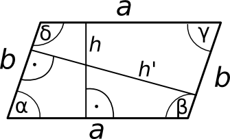

Rööpkülik

Rööpkülikuks nimetatakse nelinurka, mille vastasküljed on paralleelsed.
Rööpküliku omadusi:
- rööpküliku vastasküljed on võrdse pikkusega
- rööpküliku vastasnurgad on võrdsed
- lähisnurkade summa on 180∘
- diagonaalid poolitavad teineteist
- pindala S = a ⋅ h, kus a on alus ja h on kõrgus
- ümbermõõt võrdub küljepikkuste summaga